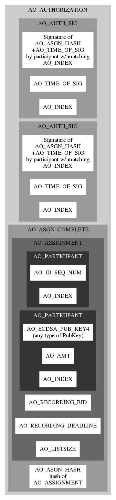

Assignment Agreement
An asssignment agreement is a list of shares available to be assigned, and identities (public keys) which will receive shares, plus a specified recording fee. Following the principles of atomic assignment, all shares assigned are assigned in their entirety, and public keys are never reused.*Most of the time, a giver of shares will be giving more shares than needed for the transaction, so they also provide one or more IDs to receive the excess shares under.
The agreement includes a recording deadline, if the agreement is not recorded by the deadline, it becomes null and void, and shares given in the agreement may be given in other agreements.*Givers of shares might record an explicit revocation of expired agreements which do not get recorded, which would act to block inclusion of any side chains that might appear containing the expired transactions. To this end, shares might remain in escrow for some period of time following an agreement expiration to allow for recording of the revocation.
When all parties, givers and receivers, have signed (Authorized) a share assignment agreement, it becomes binding upon them pending recording.If an agreement should fail to be recorded by the recording deadline, any party to the agreement may (optionally) record a refutation of the agreement including the AO_ASGN_HASH and the AO_ID_SEQ_NUM of one giver of shares in the agreement.
*Refutation must be signed by the private key corresponding to the AO_ID_SEQ_NUM given.
Note that any valid assignment agreement including any AO_ID_SEQ_NUM recorded after the deadline of this agreement automatically invalidates this agreement, but without such assignment or explicit refutation, the expired agreement may be recorded late and will then become valid and binding.

Signing an Agreement
An agreement includes separable items, like freetext notes or data, and inseparable items like share amounts and signatures. The separable items are individually hashed, and those hashes are included with the inseparable items to be hashed before signatures are applied.*Signatures are applied to the final hash of the agreement.
Since public keys for all participants are included with the agreement,*In Ⓐ¹ protocol givers of shares only include the sequence number of the ID they were assigned shares under, the amount of shares and public key are recorded in the blockchain, and must be looked up for verification anyway.
anyone can check the correctness of the signatures on the agreement. If the final signature is applied before the recording deadline, then the agreement is eligible for recording.
Recording an Agreement
Recorders work closer to the chain than ordinary users do. They check the transaction for validity against the current blockchain: Are the signatures correct? Are the timestamps in order? Are all the sources of shares in the agreement still available for assignment? Are there sufficient shares provided for recording tax? If so, then the recorder may include this agreement in a new block anytime before the recording deadline specified in the agreement.Multi-chain Assignment Agreements
The above describes the relatively simple operation of assigning shares onward in a single blockchain, the assignment is either agreed upon by all parties and recorded in the blockchain before the deadline, or not. A more interesting proposal is a smart contract which allows shares to be assigned on multiple blockchains with a single secure agreement. This concept is under development on the multi-chain exchange page.Assign Onward
28 May 2018
MIT License
Copyright (c) 2018 Assign Onward
Permission is hereby granted, free of charge, to any person obtaining a copy of this software and associated documentation files (the "Software"), to deal in the Software without restriction, including without limitation the rights to use, copy, modify, merge, publish, distribute, sublicense, and/or sell copies of the Software, and to permit persons to whom the Software is furnished to do so, subject to the following conditions:
The above copyright notice and this permission notice shall be included in all copies or substantial portions of the Software.
THE SOFTWARE IS PROVIDED "AS IS", WITHOUT WARRANTY OF ANY KIND, EXPRESS OR IMPLIED, INCLUDING BUT NOT LIMITED TO THE WARRANTIES OF MERCHANTABILITY, FITNESS FOR A PARTICULAR PURPOSE AND NONINFRINGEMENT. IN NO EVENT SHALL THE AUTHORS OR COPYRIGHT HOLDERS BE LIABLE FOR ANY CLAIM, DAMAGES OR OTHER LIABILITY, WHETHER IN AN ACTION OF CONTRACT, TORT OR OTHERWISE, ARISING FROM, OUT OF OR IN CONNECTION WITH THE SOFTWARE OR THE USE OR OTHER DEALINGS IN THE SOFTWARE.
Copyright (c) 2018 Assign Onward
Permission is hereby granted, free of charge, to any person obtaining a copy of this software and associated documentation files (the "Software"), to deal in the Software without restriction, including without limitation the rights to use, copy, modify, merge, publish, distribute, sublicense, and/or sell copies of the Software, and to permit persons to whom the Software is furnished to do so, subject to the following conditions:
The above copyright notice and this permission notice shall be included in all copies or substantial portions of the Software.
THE SOFTWARE IS PROVIDED "AS IS", WITHOUT WARRANTY OF ANY KIND, EXPRESS OR IMPLIED, INCLUDING BUT NOT LIMITED TO THE WARRANTIES OF MERCHANTABILITY, FITNESS FOR A PARTICULAR PURPOSE AND NONINFRINGEMENT. IN NO EVENT SHALL THE AUTHORS OR COPYRIGHT HOLDERS BE LIABLE FOR ANY CLAIM, DAMAGES OR OTHER LIABILITY, WHETHER IN AN ACTION OF CONTRACT, TORT OR OTHERWISE, ARISING FROM, OUT OF OR IN CONNECTION WITH THE SOFTWARE OR THE USE OR OTHER DEALINGS IN THE SOFTWARE.